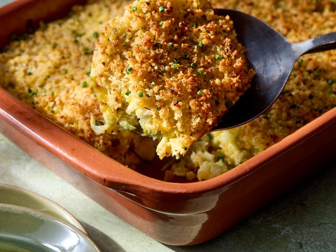

This shredded zucchini casserole is a great recipe when your garden is overflowing with zucchini. Cheesy with a crunchy panko topping, it makes a tasty side dish to any roasted meat or fish.
25 mins
35 mins
15 mins
1 hr 15 mins
8
Gather all ingredients. Preheat the oven to 375 degrees F (190 degrees C). Lightly grease a 2-quart rectangular baking dish.
Step 2Combine zucchini and salt in a large bowl and toss to coat evenly. Transfer zucchini to a colander set in the sink. Let stand to drain excess moisture, 15 minutes. Transfer zucchini to a clean kitchen towel and squeeze out any remaining liquid. Use paper towels to wipe the large bowl dry.
Step 3Heat oil in a large skillet over medium heat. Add onion and cook until soft and translucent, about 4 minutes. Add garlic and cook until fragrant, 1 minute more.
Step 4Whisk together eggs and pepper in the large bowl. Add zucchini, onion mixture, mozzarella, Cheddar, and 1/2 cup of the Parmesan cheese; combine thoroughly.
Step 5Transfer mixture to the prepared baking dish and spread into an even layer.
Step 6Bake, uncovered, for 20 minutes.
Step 7Meanwhile, combine panko and melted butter in a small bowl. Stir in remaining 1/4 cup Parmesan cheese.
Step 8Top casserole with breadcrumb mixture and bake until golden and crisp, 10 to 15 minutes. Garnish with chives.
Home